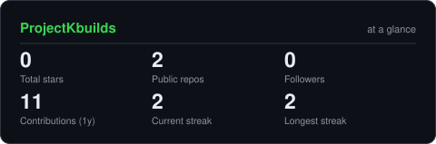
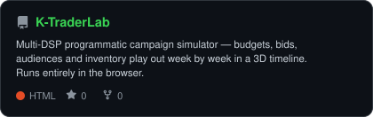

~/ whoami
$ cat about.txt
Hi, I'm Kiran Kumar Reddy — Programmatic Advertising Specialist, New York.
- 5+ years running end-to-end programmatic campaigns: setup, targeting,
bidding, pacing, trafficking, Floodlight tracking, brand safety, optimization
- Day to day: DV360, The Trade Desk, Amazon DSP, Google Ads — display,
online video, audio, and connected TV (CTV)
- Now: Known, New York (May 2025–Present) — Slate, Publix, Shake Shack,
Disney, MSK
- Before: Synechron (Bank of America, Mizuho) · Flipkart · DiLytics · LEJHRO
- Certified: DV360 · Google Ads Measurement · Google Ads Display ·
Amazon Ads Campaign Planning · The Trade Desk Kokai (Zuma)
- Reporting: Microsoft Excel (PivotTables, VLOOKUP, conditional formatting)
- Open to relocate
~/ toolbox
Only tools on my resume — and only ones I'd be happy to be asked about in an interview. Badge chips are used instead of icon sets: ad-tech platforms have no standard icon-set entries, so chips avoid broken images.
~/ skill radar

Self-rated, from real day-to-day work — deliberately not maxed on every axis. A second radar drawn from live repo language data is intentionally omitted for now: this account has a single public repo in one language, and a one-axis chart would mislead. It gets added automatically once the account has 3+ languages.
~/ contribution calendar
assets/metrics.isocalendar.svg after its first run.output branch after its first run (the raw URLs 404 until then, which is expected).Both are rebuilt on a schedule by GitHub Actions.
~/ the numbers

Self-hosted graphics generated into this repo and refreshed daily — no third-party stats server that can go down. Tokenless run: 3 tiles (stars, public repos, followers); contribution and streak tiles appear once the METRICS_TOKEN secret is set.
~/ selected work

| project | live | stack |
|---|---|---|
| K TraderLab — multi-DSP programmatic campaign simulator: set budgets, bids, audiences and inventory, then watch delivery, reach, frequency and CPM play out week by week in a 3D timeline | Try it live | HTML · JavaScript · Three.js |
All TraderLab data is synthetic and the model is labelled unvalidated — a learning and planning tool, not real campaign results. This account currently has one public repo, so this table grows as new work ships.